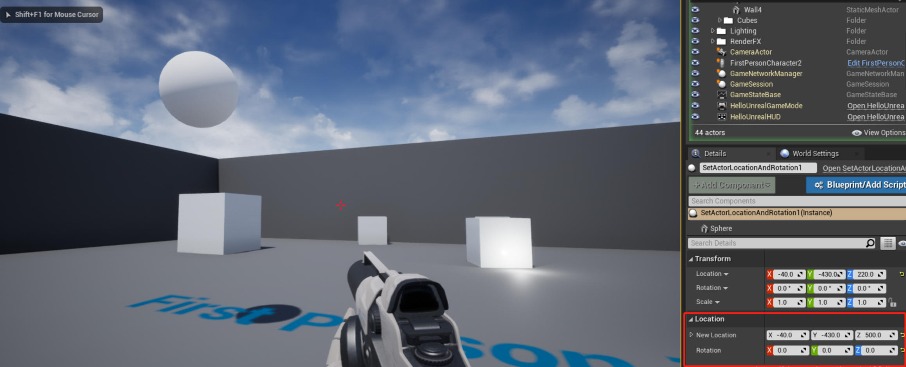

设置 Actor 的位置和朝向
接上一节教程，在本教程中，我们将学习如何使用 SetActorLocationAndRotation 函数。创建一个新的 C++ Actor 子类并将其命名为 SetActorLocationAndRotation。在头文件中创建分别一个 FVector 和 FQuat 变量，通过设置 UPROPERTY 为 EditAnywhere 使它们可以在任何地方被编辑。同时将这些变量放在 Location 类别中，使它们在一起，并与其他属性分开。
下面是最终的头文件 SetActorLocationAndRotation.h
#pragma once
#include "CoreMinimal.h"
#include "GameFramework/Actor.h"
#include "SetActorLocationAndRotation.generated.h"
UCLASS()
class UNREALCPP_API ASetActorLocationAndRotation :public AActor
{
GENERATED_BODY()
public:
// Sets default values for this actor's properties
ASetActorLocationAndRotation();
protected:
// Called when the game starts or when spawned
virtual void BeginPlay() override;
public:
// Called every frame
virtual void Tick(float DeltaTime) override;
UPROPERTY(EditAnywhere, Category = Location)
FVector NewLocation;
UPROPERTY(EditAnywhere, Category = Location)
FQuat NewRotation;
};
在这个例子中，我们将在 BeginPlay 函数中调用 SetActorLocationAndRotation 函数。要了解更多关于 SetActorLocationAndRotation 函数的信息，请点击这里。
下面是最后的 .cpp 文件 SetActorLocationAndRotation.cpp
#include "SetActorLocationAndRotation.h"
// Sets default values
ASetActorLocationAndRotation::ASetActorLocationAndRtation()
{
// Set this actor to call Tick() every frame. You can turn this off to improve performance if you don't need it.
PrimaryActorTick.bCanEverTick = true;
}
// Called when the game starts or when spawned
void ASetActorLocationAndRotation::BeginPlay()
{
Super::BeginPlay();
SetActorLocationAndRotation(NewLocation, NewRotation, false, 0, ETeleportType::None);
}
// Called every frame
void ASetActorLocationAndRotation::Tick(floatDeltaTime)
{
Super::Tick(DeltaTime);
}
编译代码。将新角色拖放到游戏中。向 actor 添加一个静态网格组件。在编辑器中，为 NewLocation 和 NewRotation 设置一个值，然后当你点击 play 按钮时，actor 将定位和旋转到这些坐标上。
效果示意图
游戏运行前：

游戏运行后：
